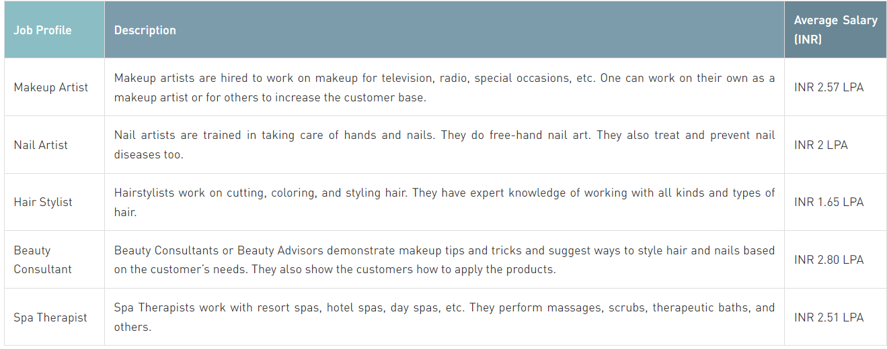

Hairstylists, cosmetologists, and nail artists pursue beauty courses, usually 1 or 2-year duration professional certifications, diplomas, or associate's degrees. Beauty courses aim to study hair cutting, hair styling, make-up, spa services, and nail art. The top specializations one can choose from for beauty courses are Skin Care, Nail Art, Hair Care, Makeup Artistry, etc.
University of Madras, Guru Nanak Dev University, Periyar University, and Bharathiar University are famous universities that offer professional certifications and diploma programs in beauty courses. There are also full-time undergraduate and postgraduate beauty courses such as BSc in Beauty Cosmetology, BVoc Beauty and Wellness, and MSc in Cosmetic Science.
There are offline on-campus certificate courses too that are taught in universities such as Mumbai University, Symbiosis University, Guru Nanak Dev University, etc. Diploma and PG diploma courses are often opted for when one does not have the time to pursue a full-time degree program. Graduates from these courses can be hired immediately upon completion of their courses. Check Cosmetology Courses
Beauty courses in India are available in various forms, certificates, diplomas, PG diplomas, bachelor’s and also master’s degree levels. The only point of difference between all levels is the duration of the course and the range of specializations to choose from.
Certificate beauty courses are available in online and offline modes. They are the most popular way to pick up on new beauty skills and tricks to help with work. They are perfect for employed individuals.
At the master’s degree, beauty courses are full-time specialized courses. Not many universities offer a master’s degree in cosmetology currently in India.
To stand out from other candidates during a job search and to also gain expertise in a field, one needs to earn specific skills in beauty courses. The top skills that will be helpful to work in the beauty industry are as follows.
The top job profiles one can work in after gaining a beauty course degree have been elaborated on below.
